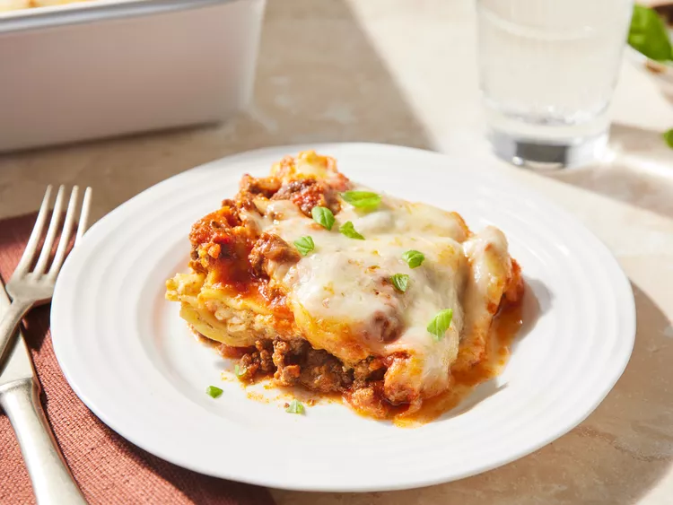

Easy Lasagna

Description
A recipe for easy lasagna
Original rexipe here by Joanie Heger on allrecipes.com
Ingredients
- Beef
- Spaghetti sauce
- Cheese
- Eggs
- Seasonings
- Lasagna noodles
- Water
Steps
- Cook and drain the ground beef, then stir in the spaghetti sauce and simmer.
- Combine the cottage cheese, 2 cups of mozzarella, eggs, half of the Parmesan, and seasonings.
- Assemble the lasagna according to the detailed recipe.
- Bake, covered, for 45 minutes.
- Uncover and continue baking for 10 minutes.